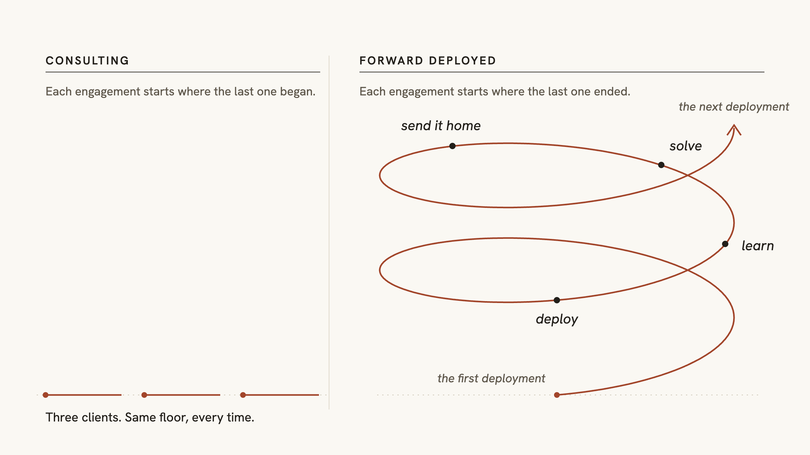
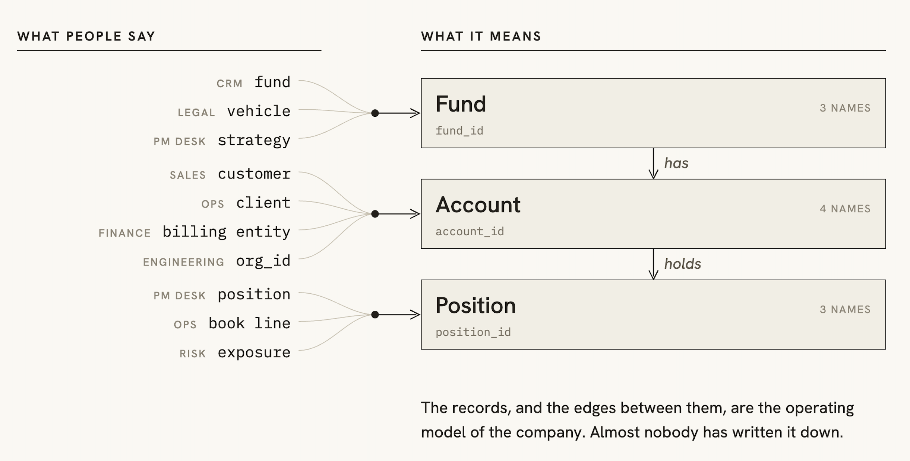

포워드 디플로이드 엔지니어의 부상과 제대로 일하는 방법
Kepler를 공동 창업하기 전, Vinoo Ganesh는 Palantir에서 Spark를 이끌고 포워드 디플로이드 엔지니어 육성의 효시가 된 Project Frontline을 만들었다. 그가 현장에서 체득한 FDE의 실무 원칙을 들려준다.

포워드 디플로이드 엔지니어(FDE)는 지금 AI 업계에서 가장 뜨거운 직무다. AI 연구소부터 스타트업, 사모펀드(PE) 운용사에 이르기까지 모두가 고객의 업무 현장에 직접 들어가 문제를 해결할 엔지니어를 찾고 있다. 정작 이들이 현장에서 무엇을 이뤄내야 하는지, 왜 이들을 채용해야 하는지에 대한 근본적인 전략에 관해서는 누구도 의견이 일치하지 않는데 말이다.
나는 AI를 위한 결정론적 인프라를 만드는 Kepler의 CEO, Vinoo다. 지난 10여 년간 서로 다른 세 조직에서 현장 배치 조직을 세 차례 구축했다. 그 과정에서 무엇이 통했고 무엇이 실패했는지, 그리고 이 역할이 앞으로 어디로 향할지 이야기해 보려 한다.
첫 번째는 Palantir였다. 제품 개발팀에서 저장·검색 시스템을 만드는 일로 시작해, 이후 FDE로 현장에 배치되어 민간 기업과 국방부(DoD)·국가안보(NatSec), 의료, 석유·가스 분야를 누볐다. 소프트웨어 엔지니어를 현장 배치 엔지니어로 전환하는 순환 근무 프로그램인 Project Frontline도 이끌었다. 약 250명이 이 프로그램을 거쳤고, 그중 상당수가 지금 OpenAI, Anthropic, xAI, Anduril 같은 기업에서 현장 배치 팀을 이끌고 있다.
두 번째는 Citadel이었다. 그곳에서 비즈니스 엔지니어링을 총괄했다. 우리의 고객은 포트폴리오 매니저였고, 중요한 질문은 오직 하나였다. 우리가 만든 데이터와 소프트웨어 제품이 이들의 알파, 즉 초과수익 창출에 실제로 기여했는가 하는 점이었다.
세 번째는 지금의 Kepler다. 이곳에서 현장 배치 조직은 영업이 아닌 제품 조직에 속해 있으며, 그럴듯하지만 틀린 답을 내놓는 것이 아예 답을 내놓지 않는 것보다 위험한 분야에서 일한다.
FDE를 둘러싼 오해
몇 달 전 a16z가 Forward Deployed Engineer Fellowship을 출범했고, 나도 옛 동료 몇 명과 함께 펠로로 선정되었다. 프로그램 자체도 훌륭했고, 그곳에서 나눈 수많은 대화도 무척 즐거웠다. 그리고 지난주, 샌프란시스코에서 열린 첫 펠로 만찬에 참석했다.
테이블에는 Snowflake와 Anthropic을 비롯해 내가 글로만 접해 온 여러 스타트업의 FDE들이 둘러앉아 있었다. 대화가 깊어질수록 흥미로운 사실이 분명해졌다. 모두가 똑같이 "forward deployed"라는 두 단어를 쓰고 있었지만, 정작 설명하는 직무는 서로 공통점이 거의 없었던 것이다. 어떤 이에게 FDE는 "두 번째 고객 미팅"에 투입되는 세일즈 엔지니어였고, 다른 이에게는 Python을 다룰 줄 알면서 매출 할당량을 짊어진 영업 담당자였다. 몇 자리 건너편에서는 노트북과 작업명세서를 챙겨 들고, 자사 제품이 채우지 못하는 빈틈을 메우러 파견된 컨설턴트에 더 가까웠다.
며칠 뒤에는 우리 WhatsApp 그룹에 사뭇 진지한 질문이 올라왔다. 이미 같은 고객사에 상주해 있는 컨설팅 회사와 우리 FDE 팀의 업무 범위를 어떻게 교통정리해야 하느냐는 질문이었다. 충분히 나올 법한 고민이지만, 적어도 내가 정의하는 FDE의 역할을 기준으로 보면 이런 질문을 던져야 하는 상황 자체가 낯설게 느껴졌다.
오해는 말자. 누가 이 직함을 쓸 자격이 있는지 따지려는 게 아니다. 용어의 의미는 시대에 따라 변하기 마련이고, 특히 이 용어는 그 어느 말보다 빠르게 변하고 있다. 다만 흥미로운 지점은 지금 업계에서 FDE 전문가로 통하는 이들조차 서로 다른 보고 체계와 인센티브 위에서 작동하는, 본질적으로 전혀 다른 직무를 이야기하고 있다는 사실이다. FDE를 다룬 YouTube 영상마다 댓글의 절반쯤이 "이거 그냥 컨설팅을 이름만 바꿔 다시 만든 것 아닌가요?"라는 반응인 것도 무리는 아니다.
이제부터 나 역시 한몫 거들었던 뼈아픈 실수 하나를 중심으로 Project Frontline 이야기를 풀어놓으려 한다. 그 실수가 어떻게 나를 FDE로 내몰았는지, 그리고 마침내 소프트웨어 엔지니어를 FDE로 탈바꿈시키는 순환 근무 프로그램의 밑거름이 되었는지 들려주겠다.
Project Frontline의 역사
먼저 당시 배경을 짚어보자. Palantir는 초창기부터 크게 두 조직으로 나뉘어 있었다. 하나는 핵심 플랫폼을 만드는 제품 개발(Product Development, PD)이었고, 다른 하나는 사업 개발(Business Development, BD)이었다. BD에는 이름과 달리 당시에도 이미 FDE라 불리던 엔지니어들과 비개발 직군의 고객 담당자들이 함께 속해 있었다. 후자는 Embedded Analyst 또는 Deployment Strategist라 불렸다.
대개 PD는 고객과 직접 마주할 일이 없었고, BD는 범용 핵심 플랫폼 개발에 직접 관여하지 않았다. PD는 BD와 이야기를 나누거나, 현장에서 만든 기능 가운데 반응이 좋았던 것을 핵심 제품에 흡수하는 식으로 고객을 간접 이해하곤 했다. 하지만 그 어느 과정도 정식 절차로 자리 잡혀 있지는 않았다. 어느 FDE가 어느 PD 엔지니어와 친분이 있어 급할 때 도움을 청할 수 있느냐 같은 사적인 인맥에 기대어 돌아갔다. 결국 현장에서 길어 올린 값진 통찰이 플랫폼에 반영될지, 아니면 그대로 증발할지는 순전히 그 자리에 누가 있느냐에 달려 있었다.
Palantir에 합류한 지 얼마 안 된 2013년, 나는 Phoenix라는 트랜잭션 저장소 개발에 투입되었다. 내가 함께 일해 본 엔지니어 중에서도 손꼽히는 실력자들이 설계한 시스템이었다. 명확한 고객 사용 사례를 바탕으로 범위도 깔끔하게 잡혀 있었다. 단 하나 문제는 그 사용 사례가 모두 제삼자를 거쳐 전해 들은 이야기였다는 점이다. 물론 우리는 설계 요구사항을 명확히 숙지하고 있었다. 요구사항의 핵심은 상업 환경에서 요구되는 데이터 보존 기간이었고, 일정 기간의 데이터를 안정적으로 유지하기 위해 버킷 단위로 나누어 저장하는 영리한 해법도 마련해 두었다. 우리가 통제하는 모든 테스트 환경에서 시스템은 명세대로 한 치의 오차 없이 돌아갔다.
그런데 실제 은행에 배포하는 순간, 테스트 데이터에서는 한 번도 본 적 없던 빈틈이 실제 금융 데이터 곳곳에 도사리고 있다는 사실이 드러났다. 비어 있는 타임스탬프가 기준 시각인 에포크(epoch)로 처리되면서, 보존 로직은 1970년 1월 1일부터 현재에 이르는 전 구간에 대해 10분 단위 버킷을 성실하게 생성해 달라고 요청했다. 순식간에 약 230만 개의 키스페이스가 만들어졌다. 기반 기술인 Cassandra가 파일 핸들 하나당 약 5MB를 소모하는 환경에서 벌어진 일이다. 서버는 당연하게도 메모리 부족(OOM, Out-of-Memory)으로 뻗어버렸고, 이를 다시 띄우려면 RAM 14TB가 필요했을 판이었다. 한마디로 배포하자마자 숨이 끊어진 프로세스였다.
흔히들 짐작하듯 사용자 조사가 부족해서 벌어진 일이 아니었다. 우리 손에는 명확한 명세가 있었고, 사용 사례도 꿰뚫고 있었으며, 금융기관이 데이터를 어떻게 저장하는지도 충분히 문헌을 읽고 학습한 상태였다. 다만 우리가 단 한 번도 해보지 않은 일이 있었으니, 바로 시스템이 고객의 실제 운영 데이터를 먹고 돌아가는 순간 그 건물 안에 직접 서 있는 것이었다. 설계도와 투박한 일상 현실 사이의 간극을 우리 쪽에서 메우고 책임지는 사람이 아무도 없었던 셈이다. 우리가 그 은행에 대해 알고 있던 모든 지식은 남의 입을 거쳐 건네받은 정보였다. 정보를 전해 준 이들은 선의로 도왔지만, 그들에게 지저분한 데이터는 굳이 언급할 필요조차 없는 일상이었을 뿐이다.
그렇게 나는 FDE가 되었다. 솔직히 말하면 현장에 불려 나간 일을 꽤 멋지게 포장한 표현이긴 하다. Phoenix가 Palantir의 민간 고객사 전반에 배포되면서, 나는 우리가 내보낸 제품의 불을 끄러 현장을 찾아 하늘을 날아다녀야 했다. 그제야 비로소 실제 사용자들과 얼굴을 맞대게 되었다. 이때 내가 마주한 사용자는 Palantir 내부의 FDE들이었다. 내게는 천만다행인 일이었다. 그들은 무엇이 어떻게 망가졌는지를 내가 알아들을 수 있는 엔지니어의 언어로 설명해 주었기 때문이다. 나는 그들이 현장에서 하려는 일을 뒷받침하기 위해 시스템을 고치고 확장해 나가기 시작했다.
결국 이 경험은 내가 FDE의 사고방식을 머리가 아닌 몸으로 체득한 과정이었다.
흔한 성공담이었다면 사용자에게 귀를 기울여야 한다는 뻔한 교훈으로 끝났을 것이다. 하지만 Phoenix는 그보다 훨씬 흥미로운 무언가로 진화했다. 어엿한 플랫폼으로 거듭난 것이다. Palantir의 FDE들은 그 위에서 사이버 보안, 고객확인(KYC), 자금세탁방지(AML)를 비롯해 초기 설계에서는 누구도 예상치 못했던 수많은 롱테일 사용 사례를 구현해 내기 시작했다. 자연히 우리 제품 개발팀의 고민도 이 다채로운 사용 사례를 뒷받침하려면 Phoenix 플랫폼을 어떻게 확장할 것인가로 옮겨갔다.
당시에는 미처 깨닫지 못했지만, 바로 이 피드백과 확장의 반복이야말로 FDE라는 역할의 본질이다. 고객의 당면 과제를 해결하는 과정에서 다음에 무엇을 만들어야 할지 결정할 통찰을 길어 올리는 것. FDE는 어디까지나 제품팀의 연장선에 서 있다.
오늘날의 FDE
안타깝게도 요즘 현장에서 마주치는 대다수 FDE는 이러한 사고방식과는 거리가 멀다. 오늘날 이 용어는 "고객과 막연하게 관련된 일을 하는 사람" 정도의 뜻으로 소비되고 있다. 포워드 디플로이드 주식 리서치 애널리스트나 포워드 디플로이드 세일즈 엔지니어 같은 기묘한 채용 공고가 심심찮게 등장하는 이유다. 직함 자체는 실소를 자아낼지 몰라도, 이런 이름을 붙이게 만든 업계의 직감만큼은 정확하다. 고객 현장이 5년 전보다 훨씬 중요해졌고, 거기에는 아주 구체적인 이유가 있기 때문이다.
손쉽게 해결할 수 있는 문제는 이미 바닥났다. 잘 빚어낸 제품 하나를 천 개의 회사에 똑같이 팔아서 해결할 수 있는 과제는 대부분 옛날에 풀렸다. 이제 남은 것은 기업 내부의 깊숙한 영역이다. 복잡하게 뒤엉켜 있고, 문서 한 장 남아 있지 않으며, 외부에서는 간접적으로조차 파악하기 힘든 실제 업무 흐름 속의 문제들이다. 모두가 느닷없이 "현장 배치"를 외치는 이유가 여기에 있다. 몇 번의 사전 탐색 미팅만으로는 특정 기업이 실제로 어떻게 장부를 마감하는지 결코 추론해 낼 수 없다. 지금 우리 앞에 남겨진 문제들은 바로 그런 책상머리의 추론으로는 절대 닿을 수 없는 영역에 있다.
이는 곧 업계가 추구하는 궁극적인 목표 자체가 소리 없이 이동했음을 뜻한다. 오랫동안 소프트웨어 업계의 성배는 반복 가능한 판매 모델, 즉 동일한 SaaS 제품을 동일한 방식으로 끊임없이 복제해 파는 것이었다. 토큰이나 바이트, 혹은 규격화된 물리적 제품을 판다면 지금도 여전히 유효한 목표다. 하지만 그 외의 영역에서 진짜 가치는 맞춤화와 마지막 구간, 즉 라스트 마일로 옮겨갔다. 어떤 제품도 미리 내다볼 수 없었던 업무 흐름의 마지막 20%, 그러면서도 나머지 80%의 기능이 현업에서 실제로 쓰일지 말지를 결정짓는 바로 그 구간 말이다. 이제 현장 배치라는 말은 곧 이 라스트 마일을 돌파한다는 뜻과 동의어가 되었다.
하지만 라스트 마일을 해결하는 것은 이 역할이 가진 사명의 절반에 지나지 않는다. 한 고객사에서 풀어낸 라스트 마일 문제는 플랫폼의 어느 부분을 범용화해야 하는지 알려주는 귀중한 신호다. 마지막 구간의 문제를 해결하고도 그 신호를 제품팀으로 되돌려 보내지 않는 FDE 조직은 그저 간판만 세련되게 바꿔 단 서비스·컨설팅 팀에 불과하다.
오늘날 FDE가 해야 할 일
내가 생각하는 FDE의 핵심 임무는 고객사의 명사와 동사를 수집하는 일이다. 무슨 뜻인지 하나씩 짚어보자.
어느 회사든 들어가서 일주일만 지내 보면, 똑같은 개념에 보통 네 가지 이상의 서로 다른 이름이 붙어 있다는 사실을 발견하게 된다. 영업팀은 customer라 부르고, 운영팀은 client라 부르며, 재무팀은 장부에 billing entity로 기록하고, 엔지니어링팀은 코드에 org_id라고 적는다. 부서와 부서가 맞닿는 경계선마다 이 용어들을 서로 번역하는 암묵적인 과정이 숨어 있고, 어느 한쪽이 정의를 슬쩍 바꾸는 순간 그 연결 고리는 여지없이 깨지고 만다. 명칭은 표면에 드러난 모습이고, 그 아래에는 운영 모델이 있다. 다시 말해 한 회사가 쓰는 명사와 동사를 온전히 익히면 그 회사가 실제로 어떻게 돌아가는지 상당 부분 꿰뚫어 볼 수 있다.
명사란 그 회사 구성원들이 실재한다고 믿는 핵심 대상이다. 대개 포지션, 거래, 거래상대방 같은 구체적인 "것"들을 가리킨다. 팀마다 전체 업무의 구심점이 되는 핵심 대상이 몇 가지씩 있기 마련인데, 그중 어느 하나도 교과서에 나오는 정의 그대로 쓰이지 않는다. 두 회사가 발표 슬라이드에서는 포지션을 똑같이 설명할지 몰라도, 실제 코드 안에서는 전혀 다른 구조로 표현한다. 이는 설계 오류가 아니라 각 회사를 고유하게 만드는 DNA에 가깝다. 만약 세상의 모든 회사가 정확히 똑같은 명사 집합을 쓰고 있다면, 이 세상에 회사는 단 하나만 존재해도 충분할 것이다.
반면 동사는 그 명사들이 어떻게 움직이고 상호작용하는지를 나타낸다. 거래가 어떤 절차를 거쳐 장부에 반영되는지, 장부를 마감하려면 어떤 조건이 충족되어야 하는지, 밤 11시에 터진 예외 상황을 누가 승인하는지, 만약 그 담당자가 휴가 중이면 어떻게 처리되는지 같은 살아 있는 규칙들이다.
이 모든 내용은 문서로 남아 있는 법이 거의 없다. 그저 구성원들의 일상 속에서 매일 실천될 뿐이다. 조직을 살아 움직이게 하는 실제 운영 체계이자, 곧 그 조직의 문화 그 자체다. 너무 오랫동안 일한 나머지 이제는 그런 방식을 의식조차 하지 않게 된 여섯 사람의 머릿속에 들어 있거나, 누군가 4년 전에 만들어 놓고 이제는 팀 전체가 아무 말 없이 의존하고 있는 낡은 스프레드시트 안에 숨어 있다. 바로 그렇기 때문에 엄청난 가치를 지니며, 동시에 회의실에 앉아 물어본다고 해서 결코 알아낼 수 없는 것이기도 하다.

대개 이런 암묵지를 가진 사람들은 자신이 그런 지식을 갖고 있다는 사실조차 자각하지 못한다. 내가 이전에 몸담았던 한 스타트업에서는 고객사가 데이터 형식을 CSV에서 Parquet로 전환하도록 설득하는 데 꼬박 1년 가까이 매달렸다. 그런데 데이터 품질 엔지니어 한 명이 번번이 제동을 걸었다. 우리는 도무지 영문을 알 수 없었다. 반대하는 명분은 매번 바뀌었지만, 결국 "Parquet가 더 불편해요", "제대로 안 돌아가요", "굳이 왜 바꿔야 하는지 모르겠어요"라는 말로 귀결되었다. 저장 공간을 아낄 수 있다는 설명도, 연산량을 대폭 줄일 수 있다는 수치도, 파이프라인을 최적화할 수 있다는 논리도 통하지 않았다. 그 어느 것도 그의 마음을 움직이지 못한 이유는, 우리의 설득이 정작 그가 겪는 실제 문제와는 완전히 동떨어진 이야기였기 때문이다.
결국 우리는 FDE 한 명을 현장에 보내 그 데이터 품질 엔지니어가 일하는 모습을 옆에서 직접 지켜보게 했다. 그는 S3에서 CSV 파일을 자신의 Windows 노트북으로 내려받은 뒤, 파일을 더블클릭해 열어 눈으로 직접 행 하나하나를 훑어보고 있었다. 그것이 바로 그의 데이터 품질 점검 업무였다. 당시에는 Parquet 파일을 더블클릭 한 번으로 바로 열어볼 수 있는 기본 뷰어가 없었다. 즉 우리의 제안은 그에게서 유일한 데이터 품질 점검 도구를 빼앗으면서 대안은 아무것도 쥐여주지 않는 셈이었다. 그는 괜히 몽니를 부린 게 아니라, 자기 본연의 업무를 해낼 수 있는 유일한 수단을 필사적으로 지키고 있었던 것이다.
우리는 그날 밤 당장 간단한 Parquet 뷰어를 만들었다. 그는 2일 뒤 마이그레이션을 승인했고, 데이터 파이프라인 실행 시간은 약 17시간에서 2시간으로 단축되었다. 만약 회의실에서 인터뷰만 거듭했다면 그는 이 이야기를 절대 꺼내지 않았을 것이다. 본인에게는 너무나 당연한 일상이라 굳이 입 밖에 낼 필요조차 못 느꼈을 테니까.
이처럼 담당자의 실제 운영 체계, 곧 그 현장의 명사와 동사를 파악하고 정의한 덕분에 우리는 눈앞의 문제를 해결하는 데 그치지 않고, 비슷한 고충을 겪는 다른 고객사들에도 두루 제공할 수 있는 범용 해법을 손에 넣을 수 있었다.
제품으로 완성해야 하는 결과물
명사와 동사를 파악하면 비로소 문제를 현장의 맥락 속에서 입체적으로 볼 수 있다. 하지만 명심해야 할 점은, 그 최종 결과물이 만족한 고객사 한 곳이 아니라 한 단계 진화한 제품이어야 한다는 사실이다.
명사와 동사는 문제가 정확히 무엇인지는 알려주지만, 그다음에 우리가 무엇을 해야 하는지까지 자동으로 알려주지는 않는다. 대부분의 FDE 조직이 자기도 모르는 사이에 곁길로 새는 지점이 바로 여기다. 당장 눈앞의 고객 문제를 해결해 주면 즉각적인 보람이 느껴지고 성과도 눈에 잘 띄며, 무엇보다 바로 그 주에 고객으로부터 고맙다는 인사를 들을 수 있기 때문이다.
물론 고객을 만족시키는 것은 그 자체로 값진 일이다. 다만 그것은 솔루션 아키텍트의 본분이며, 그들이 고객 만족도를 기준으로 평가받는 것은 지극히 합당하다. 반면 현장 배치 엔지니어는 현장에서 길어 올린 배움을 앞으로 모든 고객이 누리게 될 제품으로 탈바꿈시키기 위해 존재한다. 만약 특정 고객사 한 곳은 대만족했지만 정작 핵심 제품에는 아무런 흔적도 남기지 못한 채 FDE 프로젝트가 막을 내렸다면, 그 역할이 존재하는 유일한 이유를 달성하지 못한 것이다. 값비싼 현장의 맥락을 얻고도 그 고객사 한 곳에서 남김없이 소진해 버린 셈이기 때문이다.
나 역시 혹독한 수업료를 치르고서야 이 교훈을 배웠다. 과거 한 고객사에서 데이터 보존 작업이 급히 필요했던 적이 있다. 나는 당장 불을 끄려고 오후 한나절 동안 "vinoo.groovy"라는 Groovy 스크립트를 급조했다. 딱 그 주만 넘기고 폐기할 생각이었다. 그런데 1년 뒤에도 그 스크립트는 임직원 수가 10만 명에 육박하는 그 고객사 시스템 안에서 버젓이 돌아가고 있었고, 파일명에는 내 이름이 그대로 박혀 있었다. 상황이 워낙 우스꽝스러워지자 동료들은 아예 나를 vinoo.groovy라고 부르기 시작했다. 당장의 문제는 해결했을지 몰라도 그 해법을 제품으로 녹여내지 못한 대가였다. 결국 곧바로 치웠어야 할 임시방편을 수년 동안 유지보수하는 족쇄를 차게 되었다. 현장에 배포한 모든 지름길은 언젠가 반드시 자신이 책임져야 할 부채로 돌아온다. 어떤 수정 사항을 핵심 플랫폼에 정식으로 편입시키고, 어떤 임시방편을 소임을 다한 즉시 과감히 폐기할지 구분하는 엄격한 규율이 필요하다.
갈림길
바로 이 지점에서 두 갈래 길이 극명하게 나뉜다. 밑바탕이 되는 플랫폼 없이 현장에 뛰어들면 한 회사의 운영 모델을 배우고, 그 회사에 꼭 맞춘 솔루션을 구축해 배포한 뒤, 프로젝트가 끝나는 순간 그 모든 자산을 잃게 된다. 다음 고객사에서도 백지상태에서 다시 시작해야 하고, 그다음 고객사에서도 마찬가지다. 이것이 바로 전형적인 컨설팅이다. 보수도 훌륭하고 함께 일하는 사람들도 뛰어나지만, 성과가 복리로 쌓이지는 않는다.
반면 똑같은 현장 업무 아래에 탄탄한 플랫폼을 깔아두면, 한 회사를 깊이 이해할 때마다 다음 배포 속도는 빨라지고 제품은 한층 더 정교해진다. 엔지니어가 현장에서 치열하게 얻어낸 배움을 차곡차곡 축적할 그릇이 존재하기 때문이다. 이것이 바로 시간을 파는 일과 자산을 구축하는 일의 본질적인 차이다. 지금의 FDE 열풍을 냉정하게 평가하자면, 이 흐름에 뛰어든 기업 대다수는 실제로는 전자를 운영하면서도 이사회에는 후자를 구축하고 있다고 포장하고 있다.
여러분이 해야 할 일은 명확하다. 바로 플랫폼을 만드는 것이다.
Kepler의 방식과 적용할 만한 교훈
그래서 우리는 Kepler를 창업한 첫날부터, 아직 이런 구조를 정당화할 만큼 고객이 모이지도 않았을 때부터 조직을 이 원칙에 맞춰 설계했다. 첫 단추를 이렇게 꿰지 않으면 14개월쯤 지나서야 엔지니어들이 완전히 엉뚱한 목표를 향해 달려왔다는 사실을 뒤늦게 깨닫게 된다. 처음부터 우리 FDE들은 제품팀의 연장선으로 일해 왔다. 그 외의 모든 의사결정은 이 구조적 원칙에서 뻗어 나온다.
우리는 헤지펀드, 투자은행, 사모펀드 운용사를 비롯한 금융기관에 제품을 공급한다. 기관마다 추구하는 목표는 본질적으로 다르지만, 절대 타협할 수 없는 단 하나의 원칙만큼은 모두가 공유한다. 모든 숫자는 한 치의 오차 없이 정확해야 하며, 누군가는 그 숫자가 왜 정확한지 입증할 수 있어야 한다는 점이다. 우리는 바로 이 엄격한 제약을 중심에 두고 시스템을 설계한다. 이 제약은 고객사의 암묵적인 운영 모델을 수면 위로 또렷하게 끌어올리는 강력한 도구가 된다. 우리가 함께 일하는 그 어떤 금융기관도, 결과물에 찍힌 모든 숫자의 출처와 산출 이력이 투명하게 증명되지 않으면 그 결과물을 현업에 쓸 수 없다. 이 타협 불가능한 불변 조건이 곧 우리 플랫폼을 규정하고 지탱하는 토대가 된다.
이러한 본질적 요구는 어느 곳에나 존재한다. 다만 기관마다 이를 부르는 어휘가 다를 뿐이다.
이 금융사들은 모두 뿌리가 같은 온톨로지를 조금씩 변형해 쓰면서도, 이를 각기 다른 언어로 설명한다. 심지어 같은 은행 안에서도 신용상품 데스크가 말하는 포지션과 주식 데스크가 말하는 포지션은 비슷해 보이지만 미묘하게 다른 의미를 품고 있다. 두 펀드가 수익률 산식을 설명할 때 토씨 하나 안 틀리고 똑같은 표현을 쓰더라도, 정작 분모에 무엇을 넣는지를 두고는 기준이 갈릴 수 있다. 이러한 차이는 대부분 과거의 누군가가, 가령 2011년쯤에 나름대로 합리적인 판단을 내렸기 때문에 생겨난다. 그 결정을 내린 사람은 이미 회사를 떠났어도 결정 자체는 시스템과 관행 속에 살아남아 있으며, 사내 어디를 뒤져봐도 문서로 기록되어 있지 않다.
이 보이지 않는 간극을 찾아내 메우는 것이 바로 FDE의 임무다. 데이터베이스 스키마는 무엇이 저장되어 있는지는 알려주지만, 그 데이터가 현실에서 무엇을 의미하는지까지는 알려주지 않는다. 겉보기에 멀쩡한 시스템이 엉뚱한 숫자를 뱉어내는 이유는 바로 이 저장된 형태와 실제 의미 사이의 거리 때문이다.
모든 데이터의 출처와 산출 이력을 끝까지 추적할 수 있어야 한다는 조건은 고객 입장에서는 정확성을 담보하기 위한 필수 요건이다. 동시에 우리에게는 또 다른 결정적 역할을 해준다. 현장에서 수행한 작업이 흩어지지 않고 복리로 축적되게 만드는 장치다. 잘못 인코딩된 데이터를 어물쩍 넘겨받아 그럴듯하게 처리해 버리는 시스템은 그 인코딩이 틀렸다는 사실을 영영 알려주지 않는다. 반면 우리 시스템은 어물쩍 넘어가는 법이 없다. 특정 고객사가 어떤 개념을 어떻게 정의하는지 우리가 잘못 이해했다면, 그 오해는 그럴듯하게 포장된 오답이 아니라 명백한 시스템 실패로 즉시 드러난다. 덕분에 잘못 이해한 엔지니어는 6주 뒤 고객과의 정기 회의에서 얼굴을 붉히며 지적을 받는 대신, 시스템을 통해 그 자리에서 문제를 파악하고 바로잡을 수 있다.
이렇게 축적된 실제 배포 경험은 곧 플랫폼의 어느 부분을 확장해야 할지 가리키는 나침반이 된다. 이때 우리가 던지는 질문의 범위는 생각보다 훨씬 뾰족하다. 우리는 특정 펀드가 어떤 개별 기능을 원하는지 받아 적으려는 게 아니다. 현장에서 반복해서 마주치는 현실을 담아내기에 우리 플랫폼의 표현력이 지나치게 좁은 병목 지점을 찾아내려는 것이다. 세 회사가 똑같은 기능을 요청하는 현상은 눈에 쉽게 띄지만, 신호로서의 가치는 상대적으로 낮다. 오히려 세 회사 모두에게 필수적인 무언가를 우리의 출처·산출 이력 계층에서 깔끔하게 표현해 낼 수 없다는 사실이야말로 우리가 가장 주목하는 핵심 신호다. 이러한 신호는 대개 현장 엔지니어가 동일한 플랫폼의 한계를 세 번째로 우회하고 있는 모습으로 조용히 모습을 드러낸다.
다른 분야에서 제품을 만들고 있는 독자라면, 우리의 경험에서 다음 교훈만큼은 꼭 챙겨 갔으면 한다.
제품이 만들어내는 지렛대 효과가 있어야만 과감하게 실험할 여유가 생긴다. 플랫폼에 기능이 하나씩 내재화될 때마다 다음 배포를 시도하는 한계 비용은 눈에 띄게 낮아진다. 규모가 작은 회사가 시장에서 빠르게 학습하려면 이처럼 한 번 시도하는 비용을 극단적으로 낮춰야만 한다. 그런 제품의 지렛대 효과가 없다면 고객을 만날 때마다 값비싼 도박을 한 번씩 되풀이하는 꼴이 된다. 신중하게 범위를 잡고 몇 달 동안 개발에 매달린 끝에 추측이 틀렸다는 사실을 깨달았다면, 그 사실 하나를 배우는 데 소중한 고객 하나와 한 분기라는 시간을 통째로 날린 셈이 된다. 우리는 차라리 한 달에 네 번 틀리는 길을 택하겠다. 매번 시도하는 비용이 이전보다 훨씬 저렴해지기 때문이다.
그렇기 때문에 조직의 보고 체계는 결코 단순한 행정상의 세부사항이 아니다. FDE 조직을 영업 산하에 두면 모든 인센티브는 당장 눈앞의 계약을 성사시키는 데 맞춰진다. 물론 계약 성사는 기업 생존에 필수적인 일이고 사내의 누군가는 반드시 해내야 하는 일이다. 다만 FDE가 맡아야 할 몫이 아닐 뿐이다. 반면 이 조직을 제품 산하에 두면, 모든 현장 배포는 반드시 다음 배포가 디딤돌로 삼을 수 있는 보편적 자산을 남기는 과정이 된다.
경쟁 우위의 원천
그렇다면 오늘날 AI 시대의 진정한 경쟁 우위, 즉 해자는 어디에 있을까? 내가 보는 답은 이렇다. 우선 모델 자체는 아니다. 모델은 매달 더 저렴해지고 있을뿐더러, 어차피 대다수 기업이 외부 연구소에서 빌려 쓰는 공공재에 가까워졌기 때문이다. 인재 역시 해자가 되기 어렵다. 모든 AI 연구소가 똑같은 몇백 명의 핵심 인재를 두고 쟁탈전을 벌이고 있으며, 그들의 몸값은 이미 시장 논리에 따라 투명하게 매겨져 있기 때문이다.
특정 고객사 한 곳의 업무 흐름을 정리해 둔 지도 역시 해자가 아니다. 몇 년 전에도 그랬고 지금도 마찬가지다. 표면적인 정보를 추출하는 비용은 거의 0에 수렴하며, 누구든 오후 한나절이면 특정 회사가 어떻게 돌아가는지 그럴싸한 초안을 그려낼 수 있기 때문이다.
그 초안 자체는 자산이 아니다. 그 초안에서 어느 부분이 틀렸는지를 정확히 아는 것, 그것이 진짜 자산이다. 그리고 그 앎은 오직 현장에서 직접 부딪쳐 틀린 부분을 지적받고 바로잡아 본 생생한 경험에서만 길어 올릴 수 있다.
따라서 우리가 정의하는 진정한 경쟁 우위란, 특정 산업의 기업들이 실제로 어떻게 일하는지에 관해 축적되어 있고, 최신 상태이며, 철저히 검증된 이해다. 그리고 그 이해는 이를 끊임없이 최신 상태로 유지하고 입증할 수 있는 플랫폼 안에 살아 숨 쉬고 있어야 한다. 이 정의에 담긴 단어 하나하나에는 다 이유가 있다. "축적"이 중요한 이유는 한 번의 배포는 일화에 그치지만 열 번째 배포쯤에 이르면 비로소 산업을 관통하는 패턴이 드러나기 때문이다. "최신"이어야 하는 이유는 현장의 업무 방식이 끊임없이 진화하기 때문이다. 낡은 운영 모델은 사람이 직접 눈으로 검토할 때와 달리 자동화된 AI 시스템 아래에서는 아무런 경고음 없이 소리 없이 실패한다. "검증"되어야 하는 이유는 실제 문제가 터지기 전까지는 그럴듯해 보이는 데이터 인코딩과 완벽하게 올바른 인코딩이 겉으로 똑같아 보이기 때문이다. 우리가 데이터의 출처와 산출 이력을 집요할 정도로 끝까지 요구하는 이유도 결국 이 둘을 명확히 가려내기 위해서다.
이러한 해자는 결코 돈으로 살 수 없다. 경쟁사가 여러분의 핵심 엔지니어를 웃돈 주고 빼가고, 인터페이스를 그대로 베끼고, 심지어 지금 이 글을 읽을 수도 있다. 실제로 우리 경쟁사들은 이 세 가지를 모두 시도하고 있다! 하지만 고객 현장에서 직접 부딪쳐 틀리고, 지적받아 바로잡고, 그 교정 내용을 플랫폼에 녹여낸 뒤, 다음 고객사에서는 어떤 질문이 결정적 급소인지 이미 꿰뚫고 있는 상태로 출발하는 이 일련의 시간만큼은 결코 돈으로 압축할 수 없다. 이 주기를 한 번 통과할 때마다 다음 시도의 비용은 계단식으로 낮아진다. 그렇게 복리로 누적되는 격차야말로 온전히 여러분의 손안에 남는 진짜 자산이다.
나는 이 현장 배치 조직을 세 차례 구축하는 과정을 지켜보았고, 그때마다 어김없이 똑같은 패턴을 목격했다. 회사에 진정한 변화를 남긴 핵심 엔지니어는 고객에게 가장 많은 결과물을 납품한 사람이 아니라, 현장에서 돌아와 우리가 만드는 제품 자체를 바꾼 사람이었다.
현장 배치 엔지니어를 채용함으로써 기업이 얻는 것은 딱 하나다. 시장에서 어떤 문제를 풀 가치가 있는지 직접 확인할 수 있는 권리다. 대다수 기업은 그 출발선조차 밟아보지 못한다. 하지만 명심하라. 그것은 어디까지나 경기장에 들어서는 입장료일 뿐, 우리가 최종적으로 거머쥐어야 할 트로피는 아니다.
나는 Kepler의 CEO인 Vinoo Ganesh다. 우리는 이 글에서 줄곧 이야기한 계층, 즉 AI 제품이 산출한 모든 숫자를 본래의 출처까지 투명하게 거슬러 올라갈 수 있게 해주는 기준 사실(ground truth) 계층을 만들고 있다. Kepler를 창업하기 전에는 Palantir에서 Spark를 이끌고 Project Frontline을 설계했으며, 이후 Citadel에서 비즈니스 엔지니어링을 총괄했다. 이 분야에서 무언가를 치열하게 만들고 있거나 내 글에서 동의하기 어려운 지점이 있다면 언제든 LinkedIn에서 나와 열띤 토론을 나누어도 좋다.
출처: The Rise of the Forward Deployed Engineer — and How To Do the Job Right ↗ · Vinoo Ganesh, Latent.Space